RandomWalkMetropolisHastings¶
-
class
RandomWalkMetropolisHastings(*args)¶ Random Walk Metropolis-Hastings method.
Refer to Bayesian calibration, The Metropolis-Hastings Algorithm.
- Available constructor:
RandomWalkMetropolisHastings(prior, conditional, observations, initialState, proposal)
RandomWalkMetropolisHastings(prior, conditional, model, modelParameters, observations, initialState, proposal)
- Parameters
- prior
Distribution Prior distribution of the parameters of the underlying Bayesian statistical model.
- conditional
Distribution Required distribution to define the likelihood of the underlying Bayesian statistical model.
- model
Function Function required to define the likelihood. The dimension of the output of the model argument must be equal to the dimension of the setParameter method of the conditional argument.
- observations2-d sequence of float
Observations required to define the likelihood. If a model argument is specified, the observations correspond to the output of the model.
- initialStatesequence of float
Initial state of the Monte-Carlo Markov chain on which the Sampler is based. The dimension of the initialState must be equal to the dimension of the prior.
- modelParameters2-d sequence of float
Parameters of the model to be fixed. The dimension of the modelParameters argument must be equal to the dimension of the setParameter method of the model argument. The size of the modelParameters variable must be equal to the size of the observations argument.
- proposallist of
Distribution Distributions from which the transition kernels of the
MCMCare defined, as explained hereafter. In the following of this paragraph,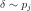
means that the realization is obtained according to the
is obtained according to the 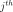
Distribution of the list proposal of size . The underlying
MCMC algorithm is a Metropolis-Hastings one which draws candidates (for the
next state of the chain) using a random walk: from the current state
. The underlying
MCMC algorithm is a Metropolis-Hastings one which draws candidates (for the
next state of the chain) using a random walk: from the current state
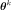
, the candidate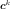
for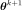
can be expressed as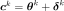
where the distribution of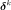
does not depend on . More precisely, here, during the Metropolis-Hastings iteration, only the component
Metropolis-Hastings iteration, only the component
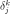
of , with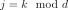
, is not zero and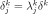
where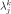
is a deterministic scalar calibration coefficient and where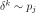
. Moreover,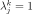
by default, but adaptive strategy based on the acceptance rate of each component can be defined using the methodsetCalibrationStrategyPerComponent().
- prior
Notes
A RandomWalkMetropolisHastings enables to carry out
MCMCsampling according to the preceding statements. It is important to note that sampling one new realization comes to carrying out Metropolis-
Hastings iterations (such as described above): all of the components of the new
realization can differ from the corresponding components of the previous
realization. Besides, the burn-in and thinning parameters do not take into
consideration the number of MCMC iterations indeed, but the number of sampled
realizations.Examples
>>> import openturns as ot >>> ot.RandomGenerator.SetSeed(0) >>> chainDim = 3 >>> # Observations >>> obsDim = 1 >>> obsSize = 10 >>> y = [-9.50794871493506, -3.83296694500105, -2.44545713047953, ... 0.0803625289211318, 1.01898069723583, 0.661725805623086, ... -1.57581204592385, -2.95308465670895, -8.8878164296758, ... -13.0812290405651] >>> y_obs = ot.Sample(y, obsDim) >>> # Parameters >>> modelParameters = ot.Sample(obsSize, chainDim) >>> for i in range(obsSize): ... for j in range(chainDim): ... modelParameters[i, j] = (-2 + 5.0 * i / 9.0) ** j >>> # Model >>> fullModel = ot.SymbolicFunction( ... ['p1', 'p2', 'p3', 'x1', 'x2', 'x3'], ... ['p1*x1+p2*x2+p3*x3', '1.0']) >>> parametersSet = range(chainDim) >>> parametersValue = [0.0] * len(parametersSet) >>> model = ot.ParametricFunction(fullModel, parametersSet, parametersValue) >>> # Calibration parameters >>> calibrationColl = [ot.CalibrationStrategy()]*chainDim >>> # Proposal distribution >>> proposalColl = [ot.Uniform(-1.0, 1.0)]*chainDim >>> # Prior distribution >>> sigma0 = [10.0]*chainDim >>> # Covariance matrix >>> Q0_inv = ot.CorrelationMatrix(chainDim) >>> for i in range(chainDim): ... Q0_inv[i, i] = sigma0[i] * sigma0[i] >>> mu0 = [0.0]*chainDim >>> # x0 ~ N(mu0, sigma0) >>> prior = ot.Normal(mu0, Q0_inv) >>> # Conditional distribution y~N(z, 1.0) >>> conditional = ot.Normal() >>> # Create a metropolis-hastings sampler >>> sampler = ot.RandomWalkMetropolisHastings( ... prior, conditional, model, modelParameters, y_obs, mu0, proposalColl) >>> sampler.setCalibrationStrategyPerComponent(calibrationColl) >>> sampler.setBurnIn(200) >>> sampler.setThinning(10) >>> # Get a realization >>> print(sampler.getRealization()) [1.22816,1.0049,-1.99008]
Methods
computeLogLikelihood(self, currentState)Compute the logarithm of the likelihood w.r.t.
getAcceptanceRate(self)Get acceptance rate.
getAntecedent(self)Accessor to the antecedent RandomVector in case of a composite RandomVector.
getBurnIn(self)Get the length of the burn-in period.
Get the calibration strategy per component.
getClassName(self)Accessor to the object’s name.
getConditional(self)Get the conditional distribution.
getCovariance(self)Accessor to the covariance of the RandomVector.
getDescription(self)Accessor to the description of the RandomVector.
getDimension(self)Accessor to the dimension of the RandomVector.
getDistribution(self)Accessor to the distribution of the RandomVector.
getDomain(self)Accessor to the domain of the Event.
getFunction(self)Accessor to the Function in case of a composite RandomVector.
getHistory(self)Get the history storage.
getId(self)Accessor to the object’s id.
getMarginal(self, \*args)Get the random vector corresponding to the
 marginal component(s).
marginal component(s).getMean(self)Accessor to the mean of the RandomVector.
getModel(self)Get the model.
getName(self)Accessor to the object’s name.
getNonRejectedComponents(self)Get the components to be always accepted.
getObservations(self)Get the observations.
getOperator(self)Accessor to the comparaison operator of the Event.
getParameter(self)Accessor to the parameter of the distribution.
getParameterDescription(self)Accessor to the parameter description of the distribution.
getParameters(self)Get the parameters.
getPrior(self)Get the prior distribution.
getProcess(self)Get the stochastic process.
getProposal(self)Get the proposal.
getRealization(self)Compute one realization of the RandomVector.
getSample(self, size)Compute realizations of the RandomVector.
getShadowedId(self)Accessor to the object’s shadowed id.
getThinning(self)Get the thinning parameter.
getThreshold(self)Accessor to the threshold of the Event.
getVerbose(self)Tell whether the verbose mode is activated or not.
getVisibility(self)Accessor to the object’s visibility state.
hasName(self)Test if the object is named.
hasVisibleName(self)Test if the object has a distinguishable name.
isComposite(self)Accessor to know if the RandomVector is a composite one.
setBurnIn(self, burnIn)Set the length of the burn-in period.
setCalibrationStrategy(self, calibrationStrategy)Set the calibration strategy.
setCalibrationStrategyPerComponent(self, …)Set the calibration strategy per component.
setDescription(self, description)Accessor to the description of the RandomVector.
setHistory(self, strategy)Set the history storage.
setName(self, name)Accessor to the object’s name.
setNonRejectedComponents(self, …)Set the components to be always accepted.
setObservations(self, observations)Set the observations.
setParameter(self, parameters)Accessor to the parameter of the distribution.
setParameters(self, parameters)Set the parameters.
setPrior(self, prior)Set the prior distribution.
setProposal(self, proposal)Set the proposal.
setShadowedId(self, id)Accessor to the object’s shadowed id.
setThinning(self, thinning)Set the thinning parameter.
setVerbose(self, verbose)Set the verbose mode.
setVisibility(self, visible)Accessor to the object’s visibility state.
-
__init__(self, *args)¶ Initialize self. See help(type(self)) for accurate signature.
-
computeLogLikelihood(self, currentState)¶ Compute the logarithm of the likelihood w.r.t. observations.
- Parameters
- currentStatesequence of float
Current state.
- Returns
- logLikelihoodfloat
Logarithm of the likelihood w.r.t. observations
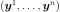
.
-
getAcceptanceRate(self)¶ Get acceptance rate.
- Returns
- acceptanceRate
Pointof dimension Sequence whose the component corresponds to the acceptance rate of the candidates obtained from a state by only changing its component, that is to the acceptance rate only relative to the
MCMC
iterations such that 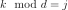
(see the paragraph dedicated to the constructors of the class above). These are global acceptance rates over all the MCMC iterations performed.
- acceptanceRate
-
getAntecedent(self)¶ Accessor to the antecedent RandomVector in case of a composite RandomVector.
- Returns
- antecedent
RandomVector Antecedent RandomVector
 in case of a
in case of a
CompositeRandomVectorsuch as: .
.
- antecedent
-
getBurnIn(self)¶ Get the length of the burn-in period.
- Returns
- lenghtint
Length of the burn-in period, that is the number of first iterates of the MCMC chain which will be thrown away when generating the sample.
-
getCalibrationStrategyPerComponent(self)¶ Get the calibration strategy per component.
- Returns
- strategylist of
CalibrationStrategy A list of CalibrationStrategy strategy, whose component
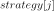
defines whether and how the (see the paragraph dedicated to the constructors of the class above) are rescaled, on the basis of the last component acceptance rate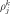
. The calibration coefficients are rescaled every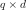
MCMC iterations with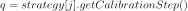
, thus on the basis of the acceptances or refusals of the last candidates obtained by only
changing the component of the current state:
candidates obtained by only
changing the component of the current state:
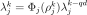
where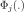
is defined by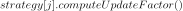
.
- strategylist of
-
getClassName(self)¶ Accessor to the object’s name.
- Returns
- class_namestr
The object class name (object.__class__.__name__).
-
getConditional(self)¶ Get the conditional distribution.
- Returns
- conditional
Distribution Distribution taken into account in the definition of the likelihood, whose PDF with parameters
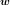
corresponds to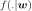
in the equations of the target distribution’s PDF.
- conditional
-
getCovariance(self)¶ Accessor to the covariance of the RandomVector.
- Returns
- covariance
CovarianceMatrix Covariance of the considered
UsualRandomVector.
- covariance
Examples
>>> import openturns as ot >>> distribution = ot.Normal([0.0, 0.5], [1.0, 1.5], ot.CorrelationMatrix(2)) >>> randomVector = ot.RandomVector(distribution) >>> ot.RandomGenerator.SetSeed(0) >>> print(randomVector.getCovariance()) [[ 1 0 ] [ 0 2.25 ]]
-
getDescription(self)¶ Accessor to the description of the RandomVector.
- Returns
- description
Description Describes the components of the RandomVector.
- description
-
getDimension(self)¶ Accessor to the dimension of the RandomVector.
- Returns
- dimensionpositive int
Dimension of the RandomVector.
-
getDistribution(self)¶ Accessor to the distribution of the RandomVector.
- Returns
- distribution
Distribution Distribution of the considered
UsualRandomVector.
- distribution
Examples
>>> import openturns as ot >>> distribution = ot.Normal([0.0, 0.0], [1.0, 1.0], ot.CorrelationMatrix(2)) >>> randomVector = ot.RandomVector(distribution) >>> ot.RandomGenerator.SetSeed(0) >>> print(randomVector.getDistribution()) Normal(mu = [0,0], sigma = [1,1], R = [[ 1 0 ] [ 0 1 ]])
-
getDomain(self)¶ Accessor to the domain of the Event.
- Returns
- domain
Domain Describes the domain of an event.
- domain
-
getFunction(self)¶ Accessor to the Function in case of a composite RandomVector.
- Returns
- function
Function Function used to define a
CompositeRandomVectoras the image through this function of the antecedent:
.
- function
-
getHistory(self)¶ Get the history storage.
- Returns
- history
HistoryStrategy Used to record the chain.
- history
-
getId(self)¶ Accessor to the object’s id.
- Returns
- idint
Internal unique identifier.
-
getMarginal(self, *args)¶ Get the random vector corresponding to the
marginal component(s).- Parameters
- iint or list of ints,

Indicates the component(s) concerned.
 is the dimension of the
RandomVector.
is the dimension of the
RandomVector.
- iint or list of ints,
- Returns
- vector
RandomVector RandomVector restricted to the concerned components.
- vector
Notes
Let’s note
 a random vector and
a random vector and
![I \in [1,n]](../../_images/math/51c159570d2ffbdc697d35ca4247b617daadb12c.svg) a set of indices. If
a set of indices. If  is a
is a
UsualRandomVector, the subvector is defined by . If is a
. If is a
CompositeRandomVector, defined by with  ,
,
 some scalar functions, the subvector is
some scalar functions, the subvector is
 .
.Examples
>>> import openturns as ot >>> distribution = ot.Normal([0.0, 0.0], [1.0, 1.0], ot.CorrelationMatrix(2)) >>> randomVector = ot.RandomVector(distribution) >>> ot.RandomGenerator.SetSeed(0) >>> print(randomVector.getMarginal(1).getRealization()) [0.608202] >>> print(randomVector.getMarginal(1).getDistribution()) Normal(mu = 0, sigma = 1)
-
getMean(self)¶ Accessor to the mean of the RandomVector.
- Returns
- mean
Point Mean of the considered
UsualRandomVector.
- mean
Examples
>>> import openturns as ot >>> distribution = ot.Normal([0.0, 0.5], [1.0, 1.5], ot.CorrelationMatrix(2)) >>> randomVector = ot.RandomVector(distribution) >>> ot.RandomGenerator.SetSeed(0) >>> print(randomVector.getMean()) [0,0.5]
-
getModel(self)¶ Get the model.
- Returns
- model
Function Model take into account in the definition of the likelihood, which corresponds to
 , that is the functions
, that is the functions 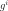
( ) in the equation of the
target distribution’s PDF.
) in the equation of the
target distribution’s PDF.
- model
-
getName(self)¶ Accessor to the object’s name.
- Returns
- namestr
The name of the object.
-
getNonRejectedComponents(self)¶ Get the components to be always accepted.
- Returns
- nonRejectedComponents
Indices The indices of the components that are not tuned, and sampled according to the prior distribution in order to take into account the intrinsic uncertainty, as opposed to the epistemic uncertainty corresponding to the tuned variables.
- nonRejectedComponents
-
getObservations(self)¶ Get the observations.
- Returns
- observations
Sample Sample taken into account in the definition of the likelihood, which corresponds to the
 -tuple of the
-tuple of the 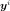
() in equations of the
target distribution’s PDF.
- observations
-
getOperator(self)¶ Accessor to the comparaison operator of the Event.
- Returns
- operator
ComparisonOperator Comparaison operator used to define the
Event.
- operator
-
getParameter(self)¶ Accessor to the parameter of the distribution.
- Returns
- parameter
Point Parameter values.
- parameter
-
getParameterDescription(self)¶ Accessor to the parameter description of the distribution.
- Returns
- description
Description Parameter names.
- description
-
getParameters(self)¶ Get the parameters.
- Returns
- parameters
Point Fixed parameters of the model
required to define the likelihood.
- parameters
-
getPrior(self)¶ Get the prior distribution.
- Returns
- prior
Distribution The prior distribution of the parameter of the underlying Bayesian statistical model, whose PDF corresponds to
 in the equations of
the target distribution’s PDF.
in the equations of
the target distribution’s PDF.
- prior
-
getProcess(self)¶ Get the stochastic process.
-
getProposal(self)¶ Get the proposal.
- Returns
- proposallist of
Distribution The
-tuple of Distributions 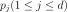
from which the transition kernels of the random walk Metropolis-Hastings algorithm are defined; look at the paragraph dedicated to the constructors of the class above.
- proposallist of
-
getRealization(self)¶ Compute one realization of the RandomVector.
- Returns
- aRealization
Point Sequence of values randomly determined from the RandomVector definition. In the case of an event: one realization of the event (considered as a Bernoulli variable) which is a boolean value (1 for the realization of the event and 0 else).
- aRealization
See also
Examples
>>> import openturns as ot >>> distribution = ot.Normal([0.0, 0.0], [1.0, 1.0], ot.CorrelationMatrix(2)) >>> randomVector = ot.RandomVector(distribution) >>> ot.RandomGenerator.SetSeed(0) >>> print(randomVector.getRealization()) [0.608202,-1.26617] >>> print(randomVector.getRealization()) [-0.438266,1.20548]
-
getSample(self, size)¶ Compute realizations of the RandomVector.
- Parameters
- nint,

Number of realizations needed.
- nint,
- Returns
- realizations
Sample n sequences of values randomly determined from the RandomVector definition. In the case of an event: n realizations of the event (considered as a Bernoulli variable) which are boolean values (1 for the realization of the event and 0 else).
- realizations
See also
Examples
>>> import openturns as ot >>> distribution = ot.Normal([0.0, 0.0], [1.0, 1.0], ot.CorrelationMatrix(2)) >>> randomVector = ot.RandomVector(distribution) >>> ot.RandomGenerator.SetSeed(0) >>> print(randomVector.getSample(3)) [ X0 X1 ] 0 : [ 0.608202 -1.26617 ] 1 : [ -0.438266 1.20548 ] 2 : [ -2.18139 0.350042 ]
-
getShadowedId(self)¶ Accessor to the object’s shadowed id.
- Returns
- idint
Internal unique identifier.
-
getThinning(self)¶ Get the thinning parameter.
- Returns
- thinningint
Thinning parameter: storing only every
point after the
burn-in period.
Notes
When generating a sample of size
, the number of MCMC iterations
performed is 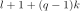
where is the burn-in period length
and
is the burn-in period length
and  the thinning parameter.
the thinning parameter.
-
getThreshold(self)¶ Accessor to the threshold of the Event.
- Returns
- thresholdfloat
Threshold of the
Event.
-
getVerbose(self)¶ Tell whether the verbose mode is activated or not.
- Returns
- isVerbosebool
The verbose mode is activated if it is True, desactivated otherwise.
-
getVisibility(self)¶ Accessor to the object’s visibility state.
- Returns
- visiblebool
Visibility flag.
-
hasName(self)¶ Test if the object is named.
- Returns
- hasNamebool
True if the name is not empty.
-
hasVisibleName(self)¶ Test if the object has a distinguishable name.
- Returns
- hasVisibleNamebool
True if the name is not empty and not the default one.
-
isComposite(self)¶ Accessor to know if the RandomVector is a composite one.
- Returns
- isCompositebool
Indicates if the RandomVector is of type Composite or not.
-
setBurnIn(self, burnIn)¶ Set the length of the burn-in period.
- Parameters
- lenghtint
Length of the burn-in period, that is the number of first iterates of the MCMC chain which will be thrown away when generating the sample.
-
setCalibrationStrategy(self, calibrationStrategy)¶ Set the calibration strategy.
- Parameters
- strategy
CalibrationStrategy Same strategy applied for each component .
- strategy
See also
-
setCalibrationStrategyPerComponent(self, calibrationStrategy)¶ Set the calibration strategy per component.
- Parameters
- strategylist of
CalibrationStrategy A list of CalibrationStrategy strategy, whose component defines whether and how the (see the paragraph dedicated to the constructors of the class above) are rescaled, on the basis of the last component acceptance rate . The calibration coefficients are rescaled every MCMC iterations with , thus on the basis of the acceptances or refusals of the last
candidates obtained by only
changing the component of the current state:
where
is defined by .
- strategylist of
-
setDescription(self, description)¶ Accessor to the description of the RandomVector.
- Parameters
- descriptionstr or sequence of str
Describes the components of the RandomVector.
-
setHistory(self, strategy)¶ Set the history storage.
- Parameters
- history
HistoryStrategy Used to record the chain.
- history
-
setName(self, name)¶ Accessor to the object’s name.
- Parameters
- namestr
The name of the object.
-
setNonRejectedComponents(self, nonRejectedComponents)¶ Set the components to be always accepted.
- Parameters
- nonRejectedComponentssequence of int
The indices of the components that are not tuned, and sampled according to the prior distribution in order to take into account the intrinsic uncertainty, as opposed to the epistemic uncertainty corresponding to the tuned variables.
-
setObservations(self, observations)¶ Set the observations.
- Parameters
- observations2-d sequence of float
Sample taken into account in the definition of the likelihood, which corresponds to the
-tuple of the
() in the equations of the
target distribution’s PDF.
-
setParameter(self, parameters)¶ Accessor to the parameter of the distribution.
- Parameters
- parametersequence of float
Parameter values.
-
setParameters(self, parameters)¶ Set the parameters.
- Parameters
- parameterssequence of float
Fixed parameters of the model
required to define the likelihood.
-
setPrior(self, prior)¶ Set the prior distribution.
- Parameters
- prior
Distribution The prior distribution of the parameter of the underlying Bayesian statistical model, whose PDF corresponds to
in the equations of
the target distribution’s PDF.
- prior
-
setProposal(self, proposal)¶ Set the proposal.
- Parameters
- proposallist of
Distribution The
-tuple of Distributions from
which the transition kernels of the random walk Metropolis-Hastings
algorithm are defined; look at the paragraph dedicated to the constructors
of the class above.
- proposallist of
-
setShadowedId(self, id)¶ Accessor to the object’s shadowed id.
- Parameters
- idint
Internal unique identifier.
-
setThinning(self, thinning)¶ Set the thinning parameter.
- Parameters
- thinningint,

Thinning parameter: storing only every
point after the
burn-in period.
- thinningint,
Notes
When generating a sample of size
, the number of MCMC iterations
performed is where is the burn-in period length
and the thinning parameter.
-
setVerbose(self, verbose)¶ Set the verbose mode.
- Parameters
- isVerbosebool
The verbose mode is activated if it is True, desactivated otherwise.
-
setVisibility(self, visible)¶ Accessor to the object’s visibility state.
- Parameters
- visiblebool
Visibility flag.